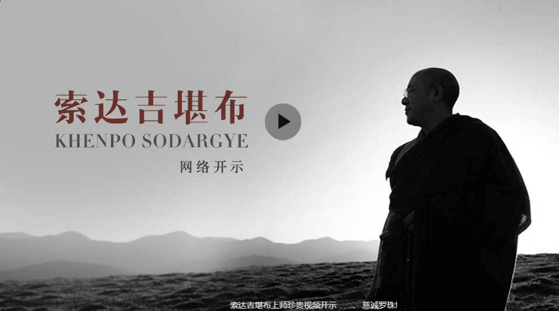

索达吉堪布仁波切，四川甘孜炉霍人，生于1962年藏历六月初四。
堪布与生俱来对佛陀有着深厚的感情，每每看到佛像唐卡，其欢喜之情由衷而发、无法言喻。小时候虽值十年“文革”，但对三宝信心始终无退，时常偷偷寻觅零碎佛像，石刻观音心咒，用泥巴做成灯器点灯供佛……尤其是对一切众生从小就有猛厉的大悲心，若见有情痛苦，悲心油然而生，泪水不禁自流，故家中邻里宰牛杀羊，根本不让堪布见到，常以借口将其骗走，否则堪布会死命护住被杀动物，恳求勿杀。

1985年，堪布舍俗出家，前往十三大虹身成就圣地——色达喇荣五明佛学院，依止法王如意宝晋美彭措（本师释迦牟尼佛和莲华生大士授记的大成就者，创立了全世界最大的佛学院一色达喇荣五明佛学院，2004年1月7日阿弥陀佛节日示现涅盘）为根本上师。后成为学院负责汉僧的大堪布，现今被弟子们称为“大上师”。堪布不仅对五部大论精通无碍，且对时轮金刚、大幻化网、大圆满等甚深密续，也能善修善讲，证达不可思议的境界。
在五明佛学院，提起索达吉堪布，没有人不知道。他是经过学院考试成为堪布（法师）的，又是法王的翻译和助手。法王让他负责汉人的教学和管理，并特许他为汉人灌顶、传法。堪布为人和处事极有特点，精明而稳重，接人待物把握分寸，从不鲁莽行事并极善于领会法王的意图，成为了法王传法的臂膀。
堪布29岁时，便已展露不可思议的智慧和能力。堪布每天很忙，从早四点起来背课，六点给藏喇嘛上课，八点给汉僧上课，十点听法王开示，下午给弟子上课，五点后去辩经，晚上还要学习、备课到十二点钟，才倒在那一米多点见方的木榻床上委屈几小时，精力如此充沛，真是少见。长期的劳累，使堪布患有严重的心脏病，讲课时经常发病，脸色灰白发肿，但堪布从未躺下、他很有毅力，任劳任怨。
如今的堪布学识渊博，智慧深邃，对汉语的驾驭程度，连很多汉人都望尘莫及。讲课开示虽不持稿，却引经据典、妙语连珠，不仅对佛教的教证公案如数家珍、朗朗上口，且对古今中外各个领域的知识均有涉猎，从孔孟老庄等诸子百家到秦皇汉武、唐宗宋祖，从分子、原子、夸克到量子场和真空……一节课下来，幽默诙谐的语言、深入浅出的讲授，令众人大为折服、收获颇巨。
2017年7月27日，藏历六月初四，是佛陀初转法轮日，也是索达吉堪布的生日。像所有“以弘法利生为家务”的修行人一样，堪布在这天来到人间，似乎成了最自然的缘起。从1987年藏历六月受法王如意宝嘱托，开始教导汉僧学修，到2017年的今天，整好30年。时间一晃而过，此间的经历却无法一笔带过。一万多个日日夜夜，堪布做了什么？
第一篇 讲辩着译，传承教法 1987年-2017年
堪布发愿：哪怕只有一个人听法，我也会尽心尽力用佛法饶益他。
【1】翻译
将大量藏文经论翻译成汉文，现保存的有800多万字，其内容涵摄人格教言、修心法门、五部大论、弥勒五论、无上密法、传记佛教史、修法仪轨等，36册收集于《显密宝库》中。

【2】讲法
30年来不断为大众传法。在一万多天里，汉语讲法9300多课，2003年后有影音记录的有2600多课，根据这些资料整理的讲记有2000多万字，57册收集于《智悲宝库》中。

【3】辩论
造有多部辩论书，廓清世人对佛教、藏密的种种误解。代表作有：《佛教科学论》《密宗断惑论》《藏密问答录》《略说佛教各派互不相违》《破除邪说论》等。

【4】造论及随笔
30年来利用空闲之余撰写经论注疏、随笔600多万字，31册收集于《妙法宝库》中。

【5】大学演讲
前往全球100多所高等学府交流，其演讲内容汇集成文，现已整理出来的部分内容有24册，200多万字。
第二篇 法雨普润，全球弘法 2006年-2017年
对于外界种种赞誉，堪布说：我只是一名老师，教传佛法的老师。
【1】网络弘法
2006年开始，借助光盘、网络等现代科技弘法，为红尘中的佛子提供系统、次第闻思修行的机缘。此外，2006年9月24日-2017年7月19日，通过网络传法690余次：
网络开示138次：汉语开示119次、全球开示13次、藏语开示6次；传讲并同步直播显宗法要490课；传讲并同步直播密宗法要63课（闻法者须修完五加行）。

【2】全球演讲
2010年开始，发愿用佛法利益社会各阶层众生。截至2017年7月：
1）大学演讲：前往108所大学（国内65所，国外43所），做145场演讲（国内102场，国外43场）；跨越全球16个国家的30个城市，走遍国内25省（直辖市）的30个城市。在哈佛、耶鲁、斯坦福、牛津、剑桥、伦敦、华盛顿，以及清华、北大、港科大、港大、台大、浙大、复旦、社科院、中科大、中央财经、中国政法、中国传媒、中国青年政治、中医科学院、上海交大、人大、南大、川大、澳大、上外、海大、山大、华中科大、北师大、青大、台湾华梵、台北、台湾师大、汕大、厦大、港中文、港理工、首经贸、湖大、云大、苏大、西北、广西、华中师大、河北医大、陕西师大、华东师大、南阳师范、青海师大、西安交大、南京农大、东北财经、苏州科大、山东理工、广西师大、成都中医药、湖南师大、华南理工、西南财经、广东金融、天大、南京林业、西安电子、华南农大、北京中医药等国内外100多所高校的讲台上留下身影。

2）社会演讲：前往各类社会团体做76场演讲；其中，企业40场，医院2场，监狱10场，戒毒所2场，禅修道场14场，论坛8场。
3）访谈：接受学者和媒体访谈32场（学者17场、媒体15场）。
2013年，被《人物》杂志评选为“年度宗教面孔”。2014年5月，成为《南方人物周刊》封面人物。杂志上架后很快脱销。

4）世界青年佛学研讨会：从2011年开始，连续举办7届世界青年佛学研讨会。历届大会分别探讨了前生后世、佛教与科学、可持续发展、社会责任、终极关怀、和平之路、幸福之路等主题，累计有海内外300多所高校的教授、学者、师生，共计4000余人参加。
5）度母法会：2016年1月2日-3日，在香港亚洲博览馆举办度母法会，祈祷以度母为主的诸佛菩萨，化解世间种种苦难。参会者10561人，分别来自中国、美国、加拿大、日本、韩国、意大利、荷兰、瑞典、马来西亚、新加坡、澳大利亚、新西兰、南非等，两天共计发愿念诵绿度母心咒7亿以上。
【3】出版书籍
截至2017年7月，已出版中文简体书籍27本：《苦才是人生》《做才是得到》《残酷才是青春》《能断：金刚经给你强大》《不离》《有求》《你在忙什么》《幸好有烦恼》《漫谈弟子规》《有什么舍不得》《没什么放不下》《大圆满前行》《般若摄颂释》《释迦牟尼佛广传·白莲花论》《百业经》《藏传净土论》《中观宝鬘论广释》《藏密佛教史》《入行论释·善说海》《中观庄严论释》（上、下）《量理宝藏论释》（上、下）《中论密钥》等。其中多本畅销书已有中文繁体、藏文、蒙文、英文、韩文等多个版本，并在全球各地陆续出版。
【4】自媒体
截至2017年7月：
堪布官方网站“智悲佛网”， 开通于2006年，累积点击量超过2亿。
堪布新浪微博“索达吉堪布”，开通于2010年10月29日（藏历铁虎年天降日），粉丝224万余人。
堪布藏语微博“索达吉藏文化”，开通于2011年4月14日，粉丝12.6万余人。
微信公众号“索达吉堪布”，开通于2014年7月31日（藏历六月初四），粉丝37.6万余人，总阅读量1670多万。
第三篇 大爱无疆，救护生命 上世纪90世代-2017年

在《启动爱心》一文中，堪布语重心长地说：“我们佛教徒应该做些善事。光是口头上说要度化天边无际的众生，白天晚上念念不忘，但在实际行动中，一辈子也没有做过一件好事，除了为家人付出外，从来也没有想过众生，这的的确确不太合理。”
【1】弘扬素食
在佛学院和佛学会中倡导吃素，着有《藏密素食观》，间接救护了无数众生。
【2】放生
1）从上世纪90年代开始倡导放生，着《放生功德文》《放生功德甘露妙雨》《劝友放生书》《最可贵的是什么》《悲惨世界》和《放生仪轨甘露妙药》《再谈放生》，引导国内外无数人参与科学、合理、规范化的放生，救护数亿众生；
2）2012年开始倡导百日放生，到2017年已举办5年，救护了无量动物的生命。
【3】临终关怀
开示《为临终者献爱心》《用佛法利益亡者》，编集《助念往生仪轨》，在各地发起并组建“助念小组”，引导大量临终者正确面对死亡。
【4】智悲学校
2007年开始，修建2所小学和1所中学。为数千没有条件上学的藏族孩子提供免费食宿，以圆满9年制义务教育。
【5】西部助学
2011年开始，为没有能力支付学费的藏族高中生和大学生资助学费。截至2016年，共资助6117人次。
【6】扶弱济困
为帮助藏族弱势群体，创办养老院、居士林等，并为防治艾滋病、包虫病、妇科病、肝炎、肺结核等出资出力。
…
第四篇 殊胜赞叹
1）佛教未来的领军人物
享誉世界，当今世界公认最创新、最具创意的年轻一代藏传佛教导师之一，兼上师和导演于一身的宗萨蒋扬钦哲仁波切在2017年1月22日是空行吉祥日回复了一位学生关于“您认为谁最有希望成为佛教未来的领军人物”这个话题时表示：环顾藏传佛教界，我认为色达喇荣的慈诚罗珠堪布与索达吉堪布非常出色。我没有和他们一起长大，他们也不是我的什么熟人，但这些年来，他们两位却一直吸引着我的注意力。事实上，说到这两位堪布，哪怕来自我这样带有狭隘偏见的人的看法，也希望能够引起大家的重视。我是一个自大骄傲并且极具嫉妒心和争强好胜的人。所以，由我这样一个人说出来–我最尊敬的是这两位堪布，大家真的应该放在心上，因为我不轻易或很难讲出这样的话。
当今这个时代，我们听过太多有关年轻的、新兴的祖古们的所作所为，起初我们对他们寄予厚望，但之后所听到的种种事情，令我们甚至都不想再见到他们。然而，这两位堪布已经在相当的一段时间中展现出他们的功德。以他们现在的名望或单单只是追随者的数量，足以让任何一个容易被腐化的人产生腐败。但这样的事情并没有发生。除了少数几个嫉妒的人所发表的一些嫉妒性的言论，我甚至没有听说过这两位堪布有做过任何不当的事情。他们的博学多闻众所周知，不仅如此，他们看来也是“表里如一”的，真正的言行一致。此外，他们没有类似“某某法王”或“某某高阶转世喇嘛”的称号，也没出生于什么特殊或特权的家族，但他们通过自己孜孜不倦的努力与奉献，在闻思修以及弘扬佛陀教法等方面都取得了非凡的成就。
我诚挚地祈愿他们两位长寿，祈愿他们身体健康以及他们的佛行事业繁荣兴盛。像他们这样的人，将使很多被宠坏了的、缺乏良好教育的、头脑闭塞顶着“法王”头衔却无所作为的转世活佛们心灵受到重创。可悲的是，每当有像两位堪布这样令人赞叹的人出现，就总有人嫉妒和羡慕。
2）我希望堪布是今天的龙树菩萨

2016年元旦 ，净空老法师在无量寿经科注第四回学习班第191集讲解的最后结尾处中，高度赞叹索达吉堪布，可以说是赞叹到了极处！净空法师表示：龙树菩萨是大乘八宗的共祖，八个宗都承认他是祖师，我希望堪布是今天的龙树菩萨。我看完索达吉堪布的这些资料，我知道佛教有救了。他很年轻，还不到六十岁。那是个再来人，不是普通人，许许多多的地方我不如他。佛教有救了，我救不了佛教，他能救。
3）功德回向索达吉堪布
我（海涛法师）经常讲一句话：努力的生命最美丽。我从堪布身上就看到了：努力，努力，努力。
刚刚我们听到堪布讲，因为法王如意宝的一句话，而三十年对汉传的这些修行人有这么大的奉献，我刚刚看到很多青年学子讲了堪布，就像妈妈一样，他们都会掉眼泪。
为什么？
因为有了堪布的教育，他终于得到佛法的恩惠，佛教里面的传承，成为一个最幸福的人，就是因为他有上师，他有母亲。一个人没有了上师，没有了母亲，他是最可怜的孤儿。

所以刚刚讲到佛学院，这两天跟堪布聊天，我有一个构想，我想堪布应该可以完成，叫国际佛学院。现在佛教已经不能分了，南传、大乘、密乘都是要学习的，出离心、大悲心、菩提心都是要学习的，所以他们说，南传断贪，北传断嗔，密乘断痴——要修绝对的清净观。
所以我这边要祈请各位，我们广修功德回向索达吉堪布，愿堪布的心愿能够成就。因为这个世界上有太少太少的，能够承担而且不退转的这样子的上师。
第五篇 结语
堪布曾经说过：希望你们明白，哪里有我讲经说法的声音和视频，哪里就有我，和我亲自在那里没有差别。
堪布还经常告诫弟子：如果能利益众生，哪怕只有一个人，想办法让他生起一颗善心，我们千百万劫做他的仆人也可以。我不知道自己能活多长时间，但只要有一口气，哪怕只有一个人听法，我也会尽心尽力用佛法饶益他。
寥寥数语，实无法描述堪布的大智、大悲于万一。尤其是堪布的证悟境界，因秘而不露、讳而不宣，故不敢妄加揣测，唯待有缘弟子以信心眼见之。

有一种光明不会灭，有一种追求永不停歇。
愿这世界吉祥安乐！
愿每颗心充满善念！